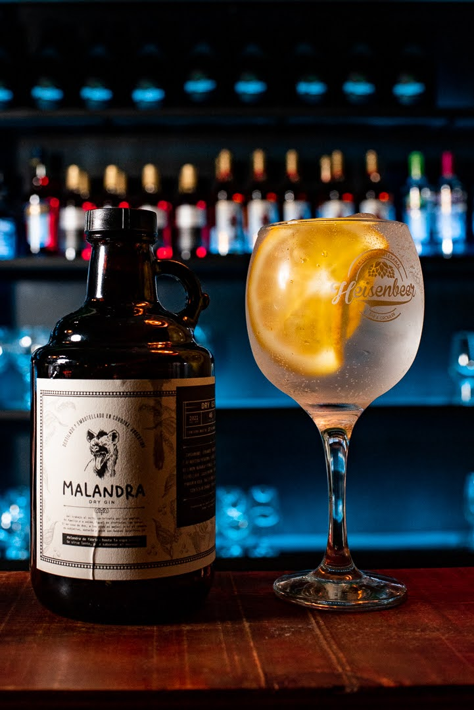

Valentin Ferraris Rey
Konows Gate 75A · Oslo, 0196 ·
valenf_r@yahoo.com.ar
Soy barman profesional con experiencia internacional preparando bebidas y como camarero y barista en bares y restaurantes. Soy una persona proactiva, organizada, analítica y responsable, con facilidad para resolver situaciones adversas y predispuesta al trabajo en equipo.
